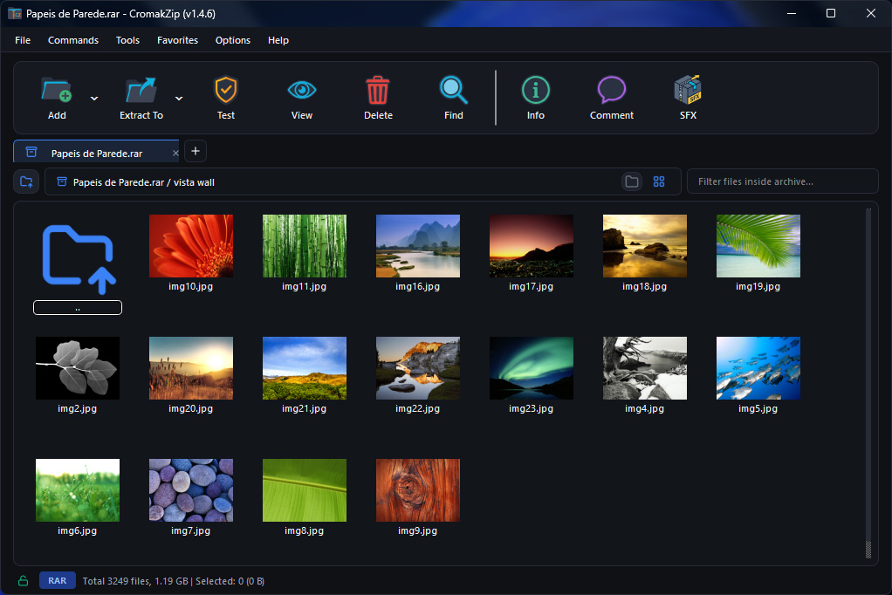
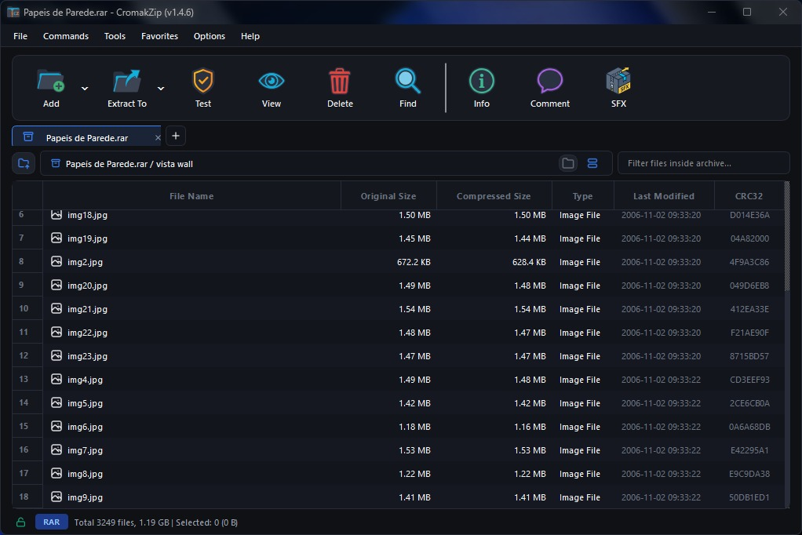
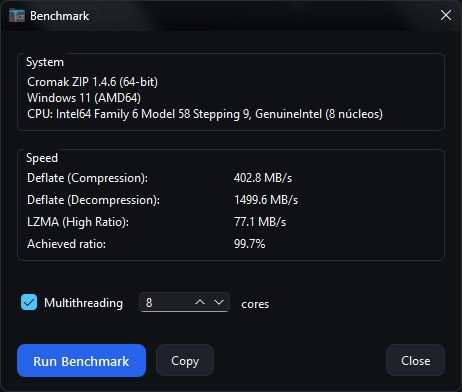

Cromak ZIP
Veja imagens direto dentro do arquivo sem extrair. Compactação Nativa em Rust e Segurança AES-256-GCM.
Chega de clicar arquivo por arquivo ou extrair pastas inteiras só para achar uma foto ou textura. Abra pacotes em 18 formatos (.cmkz, .zip, .rar, .7z, .iso, .zst) com grade de miniaturas em RAM (PNG, JPG, BMP, TGA, PSD, ICO, DDS, WEBP, SVG), abas estilo navegador, arrastar-e-soltar bidirecional e gerador autoextraível CromakSFX.

O que é o formato de arquivo .CMKZ (Cromak Archive)?
A extensão .cmkz (Cromak Archive) é o formato proprietário de compactação e criptografia desenvolvido exclusivamente pela Cromak Technology para o Cromak ZIP. Ele foi projetado do zero para substituir formatos legados que operam em thread única lenta ou utilizam cifras fracas.
Cada arquivo .cmkz é processado pelo motor nativo cmkz.dll em Rust (Zstd multi-thread) com Modo Sólido agrupado por extensão, atingindo taxas superiores de compressão em pastas de código, JSON e documentos (até 30% menor que arquivos comuns), protegido por criptografia autenticada AES-256-GCM e verificação dupla CRC32 + SHA-256.
| Propriedade Técnica (.CMKZ) | Especificação Oficial Cromak Technology |
|---|---|
| Extensão & Nome Oficial | .cmkz — Arquivo do CromakZIP (Cromak Archive Format v1.0) |
| Assinatura Binária (Magic Bytes) | 43 4D 4B 5A 01 00 (CMKZ\x01\x00) |
| Motor de Compressão | cmkz.dll em Rust · Zstd Multi-Thread (blocos ≥ 256 KB) + Modo Sólido (16 MB por bloco) + fallback inteligente store |
| Criptografia & Derivação | AES-256-GCM autenticado por entrada/bloco + PBKDF2-HMAC-SHA256 (100.000 iterações, Salt 16 bytes) |
| Integridade & Índice | Índice estruturado compactado com verificação dupla CRC32 + SHA-256 |
Cromak ZIP vs. Compactadores Clássicos
Comparativo técnico direto entre utilitários tradicionais e a nova geração em Rust + PyQt6.
| Recursos & Capacidades | Compactadores Legados | Cromak ZIP v1.4.6 |
|---|---|---|
| Motor Nativo Multi-Thread | Deflate padrão / LZMA lento | cmkz.dll em Rust (Zstd Multi-Thread + Modo Sólido) |
| Visualização de Imagens em Grade | Apenas lista de texto ou extração em disco | Miniaturas reais (96px/140px) 100% em RAM (0 bytes em disco) |
| Criptografia & Integridade | ZipCrypto ou AES simples | AES-256-GCM Autenticado + PBKDF2 + CRC32 + SHA-256 |
| Auto-Extraível (.EXE) | Interface antiga dos anos 90 | CromakSFX em Rust Win32 (~273 KB) com EULA e Scripts |
| Licença Vitalícia | US$ 23,95 – US$ 34,22 (R$ 229+) | US$ 19,90 (20% OFF · Vitalício) |
Os 4 Pilares da Arquitetura
-
Motor Nativo cmkz.dll (Rust + Zstd)
Biblioteca nativa enxuta (~611 KB) com compressão paralela multi-núcleo, Modo Sólido por extensão e fallback inteligente para
storeem mídias já comprimidas. -
Privacidade e Limpeza Automática
Miniaturas em memória RAM sem tocar o disco. Arquivos abertos no visualizador são limpos automaticamente de
%TEMP%\CromakZip_Previewao iniciar e fechar o programa.
-
Gerador CromakSFX (.exe) em Rust
Transforme qualquer pacote em um instalador executável independente com modo silencioso, tela de EULA personalizada e execução automática pré/pós-extração.
-
Interface Multi-Abas & 18 Formatos
Abra múltiplos pacotes em abas (instância única), personalize os 19 botões da barra de ferramentas e associe qualquer formato no Windows Explorer com 1 clique.
Explore o Cromak ZIP por Dentro
Capturas reais da versão 1.4.6 mostrando miniaturas em RAM, detalhes, menu inteligente e CromakSFX.

Grade de Miniaturas Instantâneas
Veja fotos, texturas e ícones direto dentro de arquivos .cmkz, .zip, .rar e .7z sem precisar extrair nada para o disco. Decodificação em lote direto na RAM compatível com PNG, JPG, BMP, TGA, PSD, ICO, DDS, WEBP e SVG.

Lista Detalhada & Árvore Hierárquica
Inspecione pacotes grandes em abas simultâneas com colunas completas de tamanho original, tamanho comprimido, taxa de compressão, hash CRC32 e filtro instantâneo por nome ou extensão sem travamentos.

Integração Windows & 18 Formatos
Menu de contexto inteligente no Windows Explorer que exibe ações de extração apenas em compactados e ações de compactação em arquivos comuns ou pastas, com suporte a multiseleção e ícones oficiais.

Gerador Auto-Extraível CromakSFX
Transforme qualquer pacote em um instalador executável .exe independente com stub nativo em Rust Win32, janela personalizada, pasta de destino padrão, modo silencioso e execução automática pós-extração.

Benchmark Multi-Núcleo & Progresso Pro
Meça a velocidade real de compressão e descompressão em MB/s com o motor Rust cmkz.dll e acompanhe operações pesadas com duas barras de progresso, taxa em tempo real, Pausa/Continuar e Segundo Plano.

Licenciamento Oficial HWID & LGPD
Avaliação gratuita de 40 dias com todos os recursos liberados, ativação vitalícia por assinatura SHA-512 vinculada ao hardware, 11 idiomas integrados e processamento 100% local sem telemetria.
Licenciamento Simples e Justo
Avalie por 40 dias com todos os recursos ou garanta sua licença vitalícia com 20% de desconto.
Avaliação Gratuita (40 Dias)
- Todas as funções liberadas por 40 dias
- Motor nativo
cmkz.dll(Zstd multi-thread) - Leitura e extração de 18 formatos
- Miniaturas de imagens 100% em RAM
- Acesso não-bloqueante aos seus pacotes
- Exibe lembrete de licença ao iniciar
- Uso comercial requer licença PRO após o trial
Licença Vitalícia PRO
- Licença Vitalícia Perpétua (Pague Uma Vez)
- Zero Telas ou Avisos de Avaliação
- Uso Comercial, Corporativo e Profissional Liberado
- Motor nativo
cmkz.dll+ Modo Sólido + AES-256-GCM - Gerador CromakSFX (.exe) Royalty-Free
- Atualizações contínuas da série 1.x
- Suporte técnico prioritário via Código HWID
Envie seu Código HWID ao suporte após a compra
Disponível em 11 Idiomas Nativos
Tanto o aplicativo quanto o instalador oficial suportam 11 idiomas com troca instantânea.
Perguntas Frequentes (FAQ)
O que é um arquivo .CMKZ e como abrir?
Um arquivo com extensão .cmkz é um pacote compactado oficial do Cromak ZIP (Cromak Archive), utilizando compressão Zstd multi-thread via cmkz.dll e criptografia opcional AES-256-GCM. Para abrir, visualizar ou extrair arquivos .cmkz no Windows 10 ou 11, basta instalar o Cromak ZIP oficial.
O Cromak ZIP exige dependências externas no computador do cliente?
Não! O instalador oficial empacota todas as bibliotecas necessárias, incluindo o motor nativo cmkz.dll e o stub CromakSFX.sfx. É só instalar e usar.
O que acontece após os 40 dias de avaliação?
Você nunca perde acesso aos seus arquivos: o Cromak ZIP continua permitindo abrir e extrair pacotes, exibindo um lembrete para adquirir a licença PRO. Para uso contínuo ou comercial, é necessária a licença vitalícia.
Como ativo minha licença PRO com o Código HWID?
Na janela de ativação, clique em Copiar HWID e envie esse código (CMKZIP-...) para o suporte da Cromak Technology junto do comprovante. Você receberá sua chave de ativação exclusiva para colar no campo Serial.